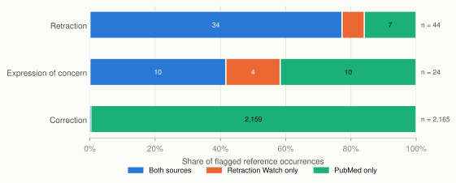
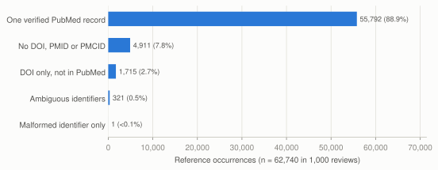
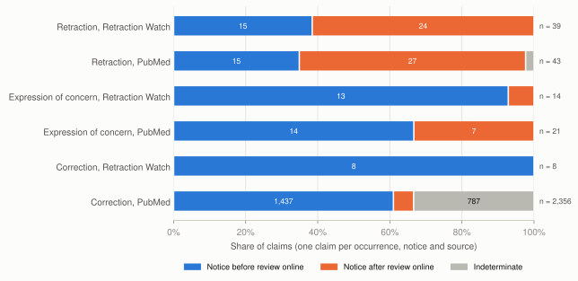

Retraction checks depended more on the status source than on identifier crosswalks
An analyst checking a systematic review's references for retractions, corrections and expressions of concern needs to know how much of the list can be checked, how much the result depends on the status source, and whether each notice came before or after the review. I measured all three in 1,000 open-access reviews of diabetes, obesity and heart failure, covering 62,740 reference occurrences.

- 92.2%of reference occurrences carried a usable DOI, PMID or PMCID, and 7.8% had none
- 2extra links from verified identifier crosswalks beyond exact DOI matching, both in references with conflicting identifiers
- 46 in 41 reviewsreference occurrences citing 44 works with a retraction claim. PubMed alone recorded 7 and Retraction Watch alone 4
- 16 before, 28 afterretraction notices relative to the review's first online date, with 2 that could not be placed
The audit works with metadata. A flag means that a status source records a notice for the cited work as of the snapshot date. It does not judge the study, the review or anyone's conduct, and citing a study after its notice does not show that the review relied on it.
Where the data come from
The review frame is one PubMed query run on 7 October 2026. It covers systematic reviews and meta-analyses on diabetes, obesity or heart failure published from 2015 to 2025 that are in the PMC Open Access Subset (7,993 records). I took the first 1,000 in order of a hash of their PMIDs, without replacement, and retrieved their JATS XML from the PMC Article Datasets on AWS. Status claims come from the Crossref Retraction Watch CSV pinned to one commit and from PubMed's own correction and retraction relations. Every response is cached with its SHA-256 hash, so the whole analysis reruns offline.
How the audit links a reference to a status notice
- Parse referencesOne row per citation in the review's JATS reference list, with every DOI, PMID and PMCID and where each one came from.
- Arm AExact DOI matching against Retraction Watch.
- Arm BDOI, PMID and NCBI-verified crosswalks against Retraction Watch. Conflicting identifiers go to manual review.
- Arm CAdds PubMed retraction, correction and concern relations, each kept as its own claim with its own date.
- Dates as intervalsA notice counts as before or after the review only when the date intervals do not overlap.
- Review queueA spreadsheet with identifiers, claims, dates, timing, match confidence and source links.
Why claims and dates remain separate
Each source keeps its own claim and date
A review of obesity and COVID-19 mortality (PMC7901910) first appeared online on 5 February 2021 and cites a meta-analysis that both sources record as retracted. Retraction Watch dates the notice 6 February 2021, a day after the review. PubMed's notice record carries only its January 2021 issue date, which falls before the review. A single "cited after retraction" label would hide that disagreement, so I kept both claims and marked the timing as indeterminate. Of 46 retraction-flagged occurrences, 2 ended up indeterminate.
Conflicting identifiers go to a person
The identifier crosswalk added only 2 links, both corrections, and both came from references whose identifiers disagreed. One reference used the article's Crossref-registered DOI, while Retraction Watch and PubMed list an alias that Crossref redirects to it. The other paired the article's PMID with the DOI of its correction notice. I labeled both as ambiguous and sent them to manual review. In total, 321 reference occurrences (0.5%) had identifiers pointing to different records.
Coverage was high and PubMed supplied most correction claims

| Claim type | Arm A | Arm B | Arm C | Reviews (C) | Unique works (C) |
|---|---|---|---|---|---|
| Retraction | 39 | 39 | 46 | 41 | 44 |
| Expression of concern | 14 | 14 | 24 | 17 | 21 |
| Correction | 5 | 7 | 2,169 | 797 | 1,408 |
| Reinstatement | 1 | 1 | 1 | 1 | 1 |
| Update (PubMed only) | 0 | 0 | 40 | 34 | 30 |
| Any claim | 55 | 57 | 2,266 | 808 | 1,492 |

What the results do not show
The cohort is a deterministic sample of PMC open-access reviews selected through PubMed indexing and is not a census. A match means agreement with two sources at their snapshot dates, which is different from sensitivity to every real retraction. Retraction Watch and PubMed also share upstream notices, so their agreement is not independent confirmation. The flagged counts are small. A citation does not show that a review used the study's data, and no pooled result was re-analyzed.
Checks
55 tests passed on synthetic fixtures covering DOI punctuation and prefixes, duplicated notices, notice DOIs cited in place of the article, conflicting PMIDs, incomplete dates and failed requests. A separate routine confirmed 2,522 of 2,522 status claims against the raw source records, and an offline rerun reproduced all 36 output tables exactly. I also checked every retraction, concern and reinstatement claim and a stratified sample of 100 parsed references against the original records by hand, and all were consistent.
Reproduce the analysis
python3 -m venv .venv && .venv/bin/pip install -e ".[test,report]"
.venv/bin/rae demo # fixtures only, seconds
.venv/bin/rae acquire # network, about 15 minutes, cached
.venv/bin/rae build && .venv/bin/rae analyze && .venv/bin/rae validate
.venv/bin/rae audit my_refs.csv --review-date 2025-06-01Report, code and data
- Full reportMethods, results and limitations (HTML)
- Source code (ZIP)Code, SQL, configuration, tests, docs, frozen manifests and result tables (3.0 MB)
- Review queue workbookEvery flagged reference with identifiers, claims, dates, timing and source links (861 KB)
- Aggregate results workbookAll result tables with a definitions sheet, units and intervals (29 KB)
- Result tables (CSV)Result tables, Tableau-ready exports and the claims ledger (833 KB)
- Analysis planTimestamped plan with three dated amendments (Markdown, 14 KB)